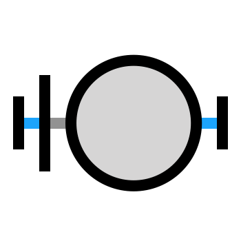

hello!
i'm a researcher at openai. previously, i was at ucl's gatsby unit and mit.
i like to run, dance, and travel.
people are fascinating. we think, feel, act, and live as individuals in complex societies, enabled by our extraordinary cognitive abilities. what are the neural foundations of this so-called high-level cognition?
-
mental jenga: a counterfactual simulation model of physical support
zhou, smith, tenenbaum, & gerstenberg
jep:g 2023 / pdf code visualization
‧ ‧ ‧we model people's judgments of physical stability using a noisy physics engine that simulates counterfactual possibilities. we ran experiments testing people's judgments of selection, prediction, and responsibility in order to probe their beliefs about stability and confirmed the utility of our model.
-
 sensory priors, and choice and outcome history in service of optimal behaviour in noisy environments
sensory priors, and choice and outcome history in service of optimal behaviour in noisy environments
pedrosa, menichini, pajot-moric, zhou, latham, & akrami
cosyne 2023
‧ ‧ ‧we analyze behavior in an auditory categorization task in humans, mice and rats, and compare this behavior to that of models trained on the same task. we also investigate the sources of particular biases that appear in the behavior.
-
decisions are guided by learning and perceptual biases in a 2-alternative-forced-choice task
zhou, pedrosa, menichini, latham, & akrami
rldm 2022
‧ ‧ ‧animals integrate sensory evidence to make decisions. over multiple trials, they also infer the statistics of sensory stimuli. here, we analyze how such statistics affect performance in a perceptual categorization task in humans and rats. we construct models that simulate normative agents behaving based on different first principles.
-

learning sensory representations for flexible computation with recurrent circuits
zhou, menendez, & latham
cosyne 2021
‧ ‧ ‧trained rnns can perform all sorts of behaviorally relevant tasks, such as the ready-set-go task. we show here that randomly initialized untrained reservoirs can also perform such tasks if an additional linear mapping is learned between the input and recurrent layers. this drastically reduces the number of parameters that need to be tuned.
-
generalized energy based models
arbel, zhou, & gretton
iclr 2021 / arxiv
‧ ‧ ‧we combine desirable properties of ebms and gans. we introduce the kale, which is a lower bound on the kl that is smooth and can be estimated from samples. after training a gan with kale, we can perform langevin sampling on the output of the generator to produce higher-quality images than those obtainable from the generator alone.
-
 faulty towers: a hypothetical simulation model of physical support
faulty towers: a hypothetical simulation model of physical support
gerstenberg, zhou, smith, & tenenbaum
cogsci 2017 [talk] / paper visualization
‧ ‧ ‧we model people's judgments of physical stability using a noisy physics engine that can simulate possible counterfactuals. we ran several mturk experiments and confirmed that our approach better modeled intuitive human judgments.
-
 methods of 3d printing micro-pillar structures on surfaces
methods of 3d printing micro-pillar structures on surfaces
ou, cheng, zhou, dublon, & ishii
uist 2015 / paper patent
‧ ‧ ‧i wrote a java processing suite to model the geometry of 3d-printed high-resolution micropillar structures, which can collectively bend to represent a vector field. using a prepared image as input, we output a representation of the resulting structure based on image gradient properties.
just a collection of snapshots in time and space